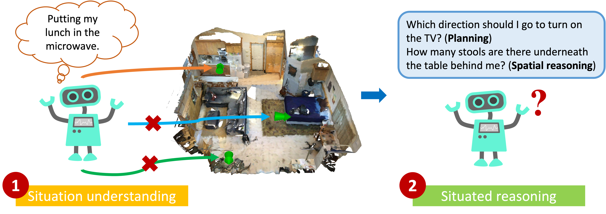

3D Scene Understanding for Vision, Graphics, and Robotics
CVPR 2023 Workshop, Vancouver, June 18th, 2023
Challenge
This year we establish a new challenge on embodied scene understanding featuring the recently introduced SQA3D benchmark. There are two tasks in the challenge:- Situation understanding: Given a scene and a sentence that describes the situation of an agent in that scene, locate the position and orientation of the agent. More details: introduction.
- Situated reasoning: Given a scene and a sentence that describe the situation of an agent in that scene, answer a question. You may use the ground truth location in this task. More details: introduction.

For more information on SQA3D, please check out the overview slides and the technical report.
The deadline of submitting your result is June 10 2023. The winner will be announced on June 11 2023.
The participants are provided with training, validation and testing sets and an automatic evaluation script. A codebase with baseline models is also available. The winner of each task will be invited to give a short talk describing their method during the workshop.
Additional information
- Since the test set is publicly available, please submit your result directly to the online leaderboard hosted by paperwithcode. More information: SQA3D website
- There are three different scene representations offered by SQA3D: 3D scan, egocentric video and bird-eye view picture. Please include the representation you use when submitting your result.
- Using the ground truth location annotations is allowed in the situated reasoning task, but please add a note of using them when submitting your result.
- If you have more questions, please contact Xiaojian Ma.